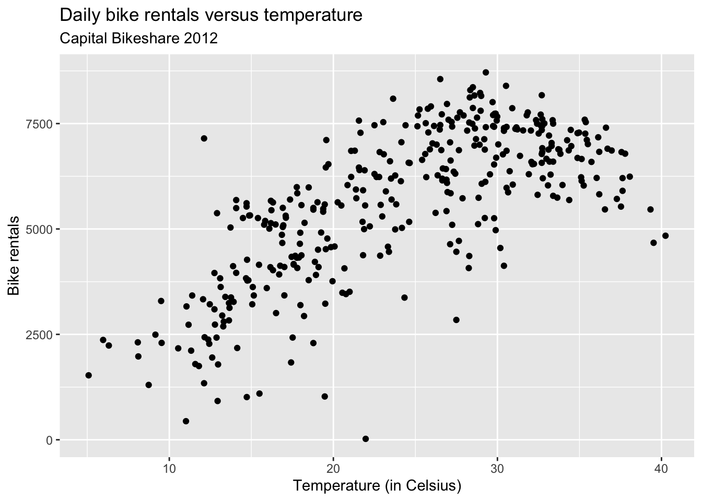

usethis::use_git_config(
user.name = "Your name",
user.email = "Email associated with your GitHub account")Lab 00: Getting started
Important
Please complete all tasks before leaving lab today.
Introduction
The goal of today’s lab is to briefly introduce you to the computing tools we’ll use in the course, set up your computing access, and complete the STA 221 Get to Know You survey.
Computing setup
RStudio
Tip
R is the name of the programming language itself and RStudio is a convenient interface.
Reserve RStudio container
Go to https://cmgr.oit.duke.edu/containers. You will log in using your NetID credentials.
Click “Reserve STA 221” to reserve an RStudio container. Be sure you reserve the container labeled STA 221 to ensure you have the computing set up you need for the class.
You only need to reserve a container once per semester.
Open RStudio container
Go to https://cmgr.oit.duke.edu/containers and log in with your Duke NetID and Password.
Click
STA221to log into the Docker container. You should now see the RStudio environment.
Git and GitHub
In addition to R and RStudio, we will use git and GitHub for version control and collaboration.
Tip
Git is a version control system (like “Track Changes” features from Microsoft Word but more powerful) and GitHub is the home for your Git-based projects on the internet (like DropBox but much better).
Sign up for GitHub account
You will need a GitHub account to access the assignments, project, and in-class exercises for the course.
- If you do not have a GitHub account, go to https://github.com and sign up for an account. If you already have a GitHub account, you can skip to the next step.
Tip
Click here for advice on choosing a username.
Connect RStudio and GitHub
Now that you have RStudio and a GitHub account, we will configure git so that RStudio and GitHub communicate with one another.
Set up your SSH Key
You will authenticate GitHub using SSH. An outline of the authentication steps is below; you are encouraged to follow along as your TA demonstrates the steps.
Note
You only need to do this authentication process one time on a single system.
- Step 0: Open your
STA 221RStudio container. - Step 1: Type
credentials::ssh_setup_github()into the console on the bottom left of the RStudio environment. - Step 2: R will ask “No SSH key found. Generate one now?” Click 1 for yes.
- Step 3: You will generate a key. It will begin with “ssh-rsa….” R will then ask “Would you like to open a browser now?” Click 1 for yes.
- Step 4: You may be asked to provide your username and password to log into GitHub. This would be the ones associated with your account that you set up. After entering this information, paste the key in and give it a name. You might name it in a way that indicates where the key will be used, e.g.,
sta221)
Configure git
The last thing we need to do is configure your git so that RStudio can communicate with GitHub. This requires two pieces of information: your name and email address.
To do so, you will use the use_git_config() function from the usethis package.
Type the following lines of code in the console in RStudio filling in your name and the email address associated with your GitHub account.
For example, mine would be
usethis::use_git_config(
user.name = "Maria Tackett",
user.email = "maria.tackett@duke.edu")It may look like nothing happened but you are now ready interact between GitHub and RStudio!
Update document and push changes to GitHub
Complete the short exercise to make sure RStudio and GitHub are correctly configured and you are able to send work between the two platforms. You are encouraged to follow along as your TA demonstrates the steps.
Getting started
Click here to create your individual
lab-00repo: https://classroom.github.com/a/HJQpdTm_Click to open your
lab-00repo.Click on the green CODE button, select Use SSH (this might already be selected by default, and if it is, you’ll see the text Clone with SSH). Click on the clipboard icon to copy the repo URL.
In RStudio, go to File → New Project → Version Control → Git.
Copy and paste the URL of your assignment repo into the dialog box Repository URL. Again, please make sure to have SSH highlighted under Clone when you copy the address.
Click Create Project, and the files from your GitHub repo will be displayed in the Files pane in RStudio.
Click
lab-00.qmdto open the template Quarto file. This is where you will write up your code and narrative for the lab.
Update the Quarto document
Task 1: Change the author name at the top of the document to your name. Render the document. You will see your name at the top of the rendered PDF.
Task 2: The plot shows the relationship between the daily temperature and number of bike rentals in Washington, D.C.’s Capital Bikeshare in 2012.

Write 1 - 2 observations from the plot. Render the document. You will see your response in the rendered PDF.
Commit and push changes to GitHub
Once you have made your final updates, go to the Git pane in your RStudio instance. This is a tab in the top right corner of the RStudio window.
Check the appropriate boxes on every file in the Git pane. All checked files will be sent to GitHub.
Next, write a meaningful commit message (for instance, “updated author name”) in the Commit message box.
Click Commit. Note that every commit needs to have a commit message associated with it.
Now that you have made an update and committed this change, click Push to send the changes to GitHub.
Go to your GitHub repo and refresh the page. You should see your commit message next to the updated files. If you see this, all your changes are on GitHub and you’re good to go!
Submit GitHub username
Use the link below to submit your GitHub username and confirm that you (1) have access to an RStudio container and (2) have completed the steps to configure git and send files between RStudio and GitHub.
STA 221 Student Survey
Use the link below to complete the STA 221 Get to Know You Survey. This survey will help me learn more about you, your interests, and your previous statistics and computing experience. I will also use the survey to form lab teams.